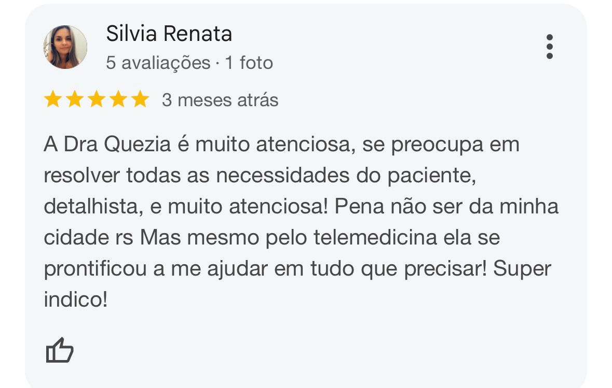
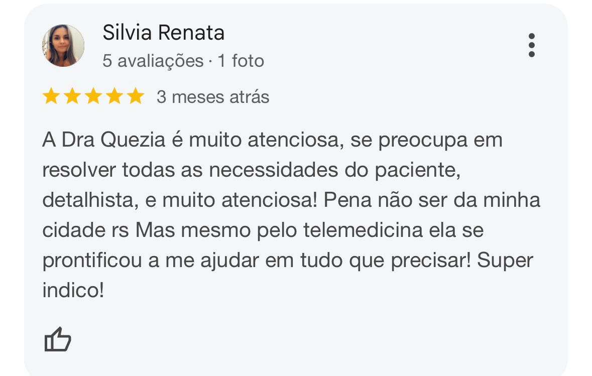
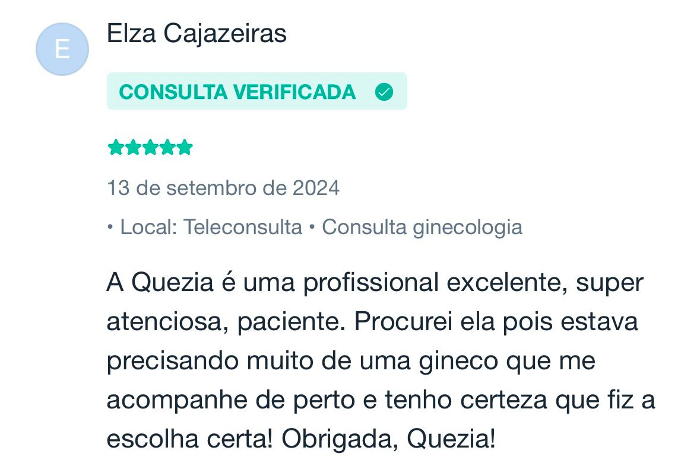
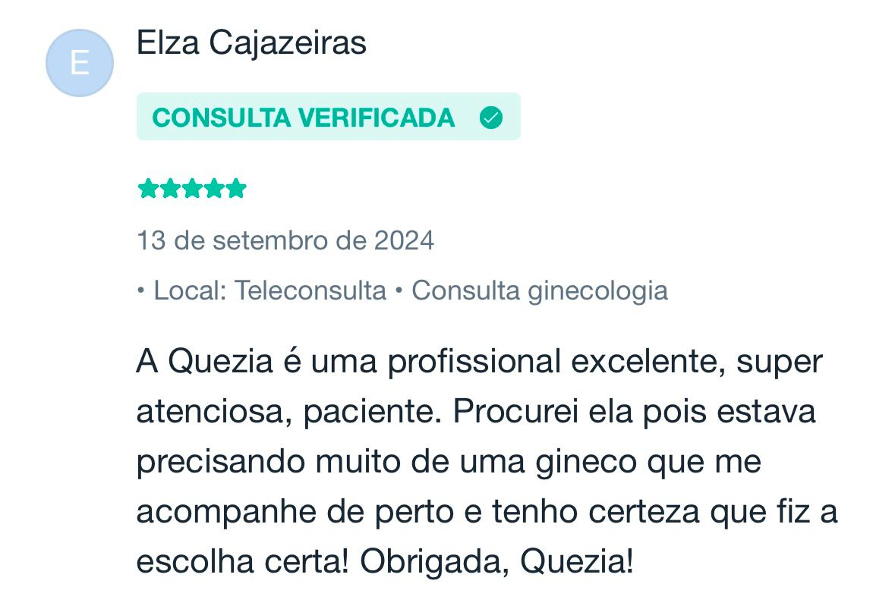
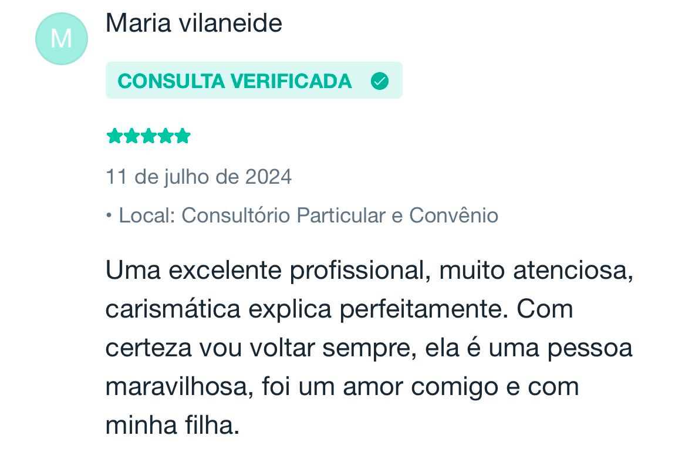
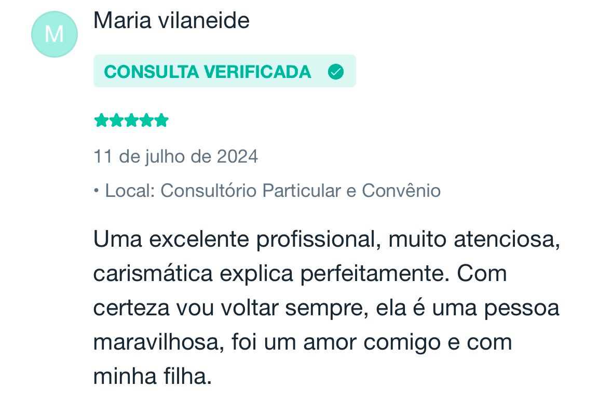
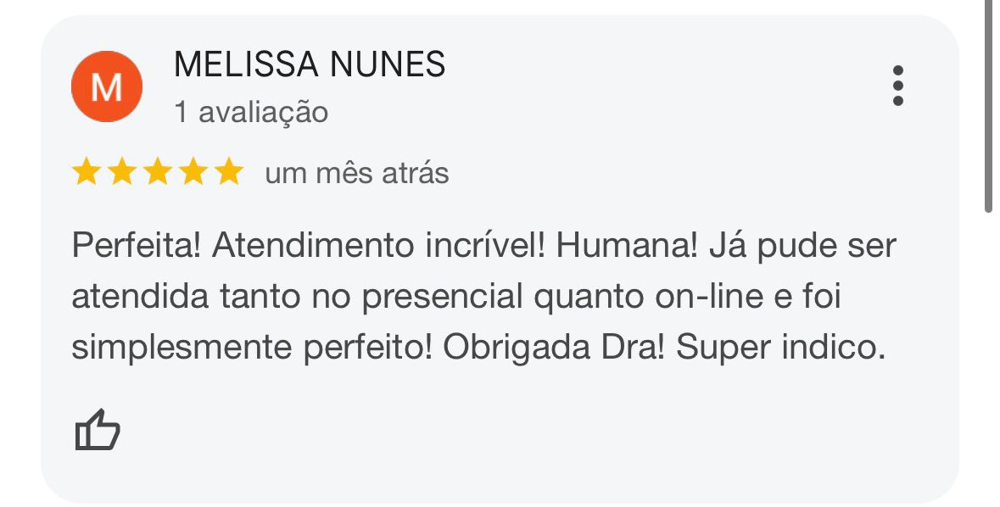
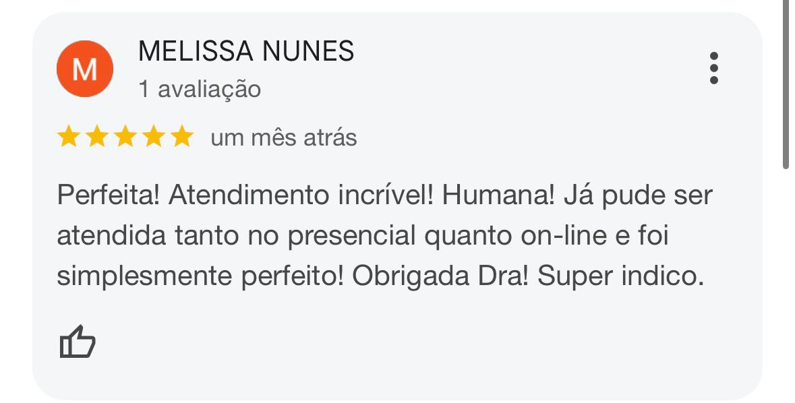

Sobre
Dra. Quezia Prado
Sou a Dra. Quezia, ginecologista e uroginecologista, com formação em Belém-PA e especialização em São Paulo. Minha atuação abrange ginecologia geral, reposição hormonal, envelhecimento saudável, dores pélvicas, planejamento familiar, disfunções do assoalho pélvico e muito mais.
Tenho ampla experiência em cirurgias ginecológicas, além de métodos contraceptivos como DIUs e Implanon. Trato condições como perda urinária, infecções urinárias recorrentes, corrimentos vaginais de repetição, endometriose, miomas, adenomiose, distúrbios hormonais como a síndrome dos ovários policísticos. Planejo com você, uma transição tranquila pelo climatério e menopausa, fazendo a reposição hormonal, quando necessária, e prevenindo todas as condições que podem surgir nesse período.
Meu compromisso é oferecer um atendimento personalizado, promovendo saúde e bem-estar para que cada mulher se sinta bem consigo mesma.
Fiquem à vontade para clicar em um dos assuntos descritos aqui e entenderem um pouco mais sobre cada tema!
Contracepção: diu, implanon
Agendar ConsultaA contracepção de longa duração é uma excelente alternativa para aquelas mulheres que buscam uma proteção confiável e sem a necessidade de intervenções diárias. O DIU e o Implanon são os representantes dessa classe de contraceptivos e são opções eficazes, discretos e práticos, proporcionando tranquilidade por longos períodos, com a conveniência de serem facilmente revertidos quando desejado. Além disso, o custo-benefício ao longo do tempo é notável, uma vez que esses métodos exigem um investimento inicial, mas não necessitam de reposição constante, como ocorre com métodos de uso diário ou mensal.
DIU
É um pequeno dispositivo inserido dentro da cavidade uterina, que promove a contracepção de diferentes formas, a depender do seu material. Pode ser colocado em consultório médico, sendo um procedimento rápido e seguro. Outra opção é a colocação em centro cirúrgico, sendo um procedimento 100% indolor, eficaz e seguro. A decisão do local a ser inserido vai depender de certas questões de cada paciente e desejo da própria paciente. A duração pode variar de 5 a 10 anos, dependendo do tipo de DIU escolhido. Assim que removido, a possibilidade de gestação retorna, não havendo qualquer interferência na fertilidade das usuárias do método.
Implanon
É um pequeno implante hormonal de 4 cm com um único hormônio que promove a contracepção. É o método mais seguro do mundo, com a menor taxa de falha que existe. Tem duração de três anos e além da contracepção, ele pode ser um aliado no tratamento de várias doenças, como a própria endometriose.
É colocado na braço não dominante em consultório, com anestesia local, tornando o procedimento seguro, rápido e extremamente tolerável do ponto de vista de dor.
Ele não exige uma manutenção constante e não traz qualquer interferência no cotidiano de quem usa o método. Tem uma reversibilidade rápida, não trazendo consequências para a fertilidade futura.
O Implanon é indicado para mulheres que desejam uma solução contraceptiva de longa duração, prática e altamente eficaz. Ele pode ser uma excelente opção para aquelas que têm dificuldades em lembrar de tomar a pílula todos os dias ou que não querem se preocupar com métodos contraceptivos mensais ou diários.
DIU HORMONAL
DIU Mirena
O DIU Hormonal (Mirena / Kyleena) é um dispositivo intrauterino que libera uma dose constante de levonorgestrel, um tipo de progesterona, diretamente no útero, tendo uma ação local altamente eficaz.
Além de impedir a gravidez, o Mirena também é utilizado para tratar condições como sangramentos menstruais excessivos, ajudando a reduzir o fluxo menstrual e em alguns casos, até gerando um quadro de amenorréia (ausência de menstruação).
Além disso, ele é um grande aliado no tratamento de várias doença ginecológicas, como a endometriose, adenomiose, miomas uterinos, síndrome dos ovários policísticos, entre outras, e muitas vezes, é capaz de retardar ou até mesmo impedir uma intervenção cirúrgica.
Para as mulheres que precisam iniciar a reposição hormonal no climatério, o Mirena promove a proteção do endométrio, tornando a reposição hormonal mais segura.
O Kyleena é um dispositivo intrauterino um pouco menor, e com menor quantidade de hormônio, também com grande eficácia na contracepção e controle de fluxos menstruais. Sua colocação é extremamente rápida e segura, e tem duração de até 5 anos, com eficácia comprovada e mantida.
Os DIUs Hormonais são peças fundamentais no meu consultório e se encaixam perfeitamente para mulheres com uma vida mais corrida, que desejam praticidade , segurança e conforto.
DIU NÃO HORMONAL (Cobre / Cobre com Prata)
São pequenos dispositivos, inseridos dentro da cavidade uterina, com alta taxa de eficácia contraceptiva.
A principal vantagem dessas opções é a ausência completa de hormônios em sua constituição, logo, a paciente fica com o ciclo menstrual e ovulatório 100% natural, sem interferências alguma de medicações.
É muito indicado para as pacientes que apresentam contraindicação ao uso hormonal, como tromboses ativas ou alguns cânceres, como o de mama, ou simplesmente, desejam algo livre de medicações.
O DIU de cobre tem duração comprovada por até 10 anos. Já o de cobre com prata tem 5 anos garantidos para uma contracepção eficaz.
Ambos são excelentes métodos contraceptivos e não causam interferência alguma no cotidiano das usuárias. Porém, pela sua ação contraceptiva envolver mecanismos inflamatórios locais, pode acabar por gerar períodos de cólicas e sangramentos menstruais aumentados, que podem ser controlados com medicações sintomáticas, e por esse motivo, a escolha pelo método deve ser feita de forma consciente e com um profissional capacitado.
Agendar Consulta
Feedbacks

 

 


 

 



Contato
Entre em contato para mais informações